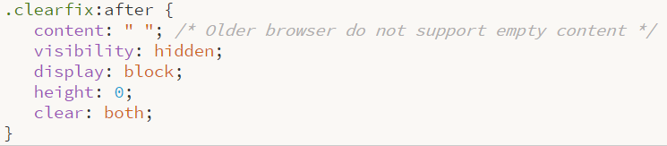

De vorige opdracht zijn we geëindigd zoals voorbeeld 1. Nu gaan we de rest van de website maken maar alles wordt niet meer stap voor stap uitgelegd. Je zal dus meer moeten nadenken over welke html of css elementen je nodig hebt, om het gewenste resultaat te bereiken. Een voorbeeld van het eindresultaat kan je hier bekijken.
| Opdracht 1: menu Maken |
|
Open het bestand completeSite.html.
- Maak binnen je divisie menu het menu zoals weergegeven in Voorbeeld 2.
- Maak gebruik van de ongeordende lijst en zorg dat deze naast elkaar wordt weergegeven.
- Afstanden staan weergegeven in Voorbeeld 2. Lettertype is Trebuchet MS, 14px.
- De woorden zijn klikbaar (koppelingen). Zodra je met de muis over de link heen gaat, veranderd de tekstkleur naar het donkergroen van de achtergrond.
- Let goed op de positie van #menu (de blauwe achtergrond). Daaronder moet nog een stukje donkergroen van de achtergrond zichtbaar zijn.
- Let ook op dat de instellingen alleen voor de divisie #menu gelden. We gaan later ook nog de lijst en koppelingen gebruiken met andere instellingen.
Sla het bestand op als completeSite.html.
|
Nu het menu staat gaan we ons richten op de content van de website. Vorige keer hebben we een #sidebar en #main gemaakt. Als eerste gaan we ons richten op de #sidebar.
| Opdracht 2: h2 |
|
Open het bestand completeSite.html.
- Voeg als eerst het plaatje gif toe. Gebruik align left om de tekst naast het plaatje te krijgen.
- Voeg een h2 in met de titel, naast de afbeelding.
- Ga nu naar je css.
- Maak een class aan voor de afbeelding en zorg dat deze 20px van de linker rand komt te staan zodat de site netjes uitgelijnd is.
- Geef in dezelfde class ook een margin-right mee van 10px zodat de h2 tekst niet strak tegen het plaatje komt te staan.
- Koppel nu je css class aan de img.
- Voeg de h2 ook toe aan je css en geef deze een lettertype grootte van 22px. Font-weight is normal. Voeg een margin-top van 0px toe zodat de tekst bovenaan is uitgelijnd.
- Als laatste voeg je in de css aan body lettertype georgia toe.
- Je pagina moet er nu net zo uitzien als voorbeeld 3.
Sla het bestand op als completeSite.html.
|
| Opdracht 3: sidebar |
|
Open het bestand completeSite.html.
- We gaan nu de sidebar verder afmaken. Probeer deze exact zo na te maken zoals voorbeeld 4.
- Er wordt weer gebruik gemaakt van een ongeordende lijst. Zwarte puntjes moet je vervangen door de afbeelding li.gif.
- Zorg dat de list-style-position op inside staat. De afstand vanaf de linker rand kan je uitrekenen. De afstand van h2.gif is 20px. De afbeelding is 22px breed. Li.gif is 13px breed. Je weet dan de afstand van li.gif naar de linker rand.
- Geef ook een padding-top van 5px mee zodat de afstand tussen de links iets beter wordt.
- De kleur van de koppeling is hetzelfde blauw als de achtergrond van het menu namelijk #4CA196
- zodra je met de muis over de link heen gaat, komt er een streep onder.
- Voeg daarna opnieuw een H2 toe zoals in de vorige opdracht.
- Daaronder komt tekst binnen een P. Zorg dat deze p een linker margin van 20px heeft en rechts van 5px.
- Je sidebar moet er uitzien als voorbeeld 4
Sla het bestand op als completeSite.html.
|
| Opdracht 4: sidebar |
|
Open het bestand completeSite.html.
- Mogelijk dat jouw sidebar er smaller uitziet dan op het voorbeeld. Om dit er wat beter uit te laten zien verbreden we #sidebar naar 300px. Uiteraard moet je dan #main ook met 40px verkleinen.
Sla het bestand op als completeSite.html.
|
| Opdracht 5: main |
|
Open het bestand completeSite.html.
- Probeer nu zo goed mogelijk voorbeeld 5 na te maken. Maak hierbij gebruik van Lorum Ipsum tekst.
- De titel is H1.
- Ondertitel is grijs. De koppelingen hetzelfde blauw als in de sidebar. Je mag uiteraard je eigen naam invullen.
- Het uitvullen van de tekst doe je met text-align justify.
- De knop onderaan doen we in de volgende opdracht.
Sla het bestand op als completeSite.html.
|
Grote kans dat de #sidebar een andere lengte heeft dan #main. Dit is een bekend probleem in HTML/CSS. In de huidige CSS vorm kan je geen variabele lengte opgeven waarin je bijvoorbeeld kan zeggen dat de #sidebar even lang moet zijn als de lengte van #main. Er is wel een CSS-hack gemaakt welke dit probleem oplost.
| Opdracht 6: clearfix |
|
Open het bestand completeSite.html.
- Hieronder staat de clearfix class. Type deze over in je CSS.
- Koppel de class in de HTML aan de section #content.
- Test je bestand in je webbrowser. Je ziet dat de witte achtergrond netjes tot onderaan doorloopt.
Sla het bestand op als completeSite.html.
|

In Voorbeeld 6 staat de button die onderaan het content veld moet staan. Deze is in het voorbeeld flink vergroot. Deze gaan we nu proberen zo goed mogelijk na te maken.
| Opdracht 7: knop maken |
|
Open het bestand completeSite.html.
- De button is een paragraaf met een speciale opmaak waardoor het een knop lijkt. Je moet dus geen <button> aanmaken. Deze zijn lastiger te stylen.
- Breedte is 50px. afstand van de tekst aan de binnenkant is overal 3px.
- Rand is 1px solid en de blauwe kleur in de sidebar. Tekst kleur is dezelfde kleur blauw. Achtergrondkleur is een grijze variant van die blauw.
- Zorg dat de hele knop rechts wordt uitgelijnd. Afstand van de rechterkant is 15px.
- Tekst in het midden uitlijnen en de grootte ervan is 10px.
Sla het bestand op als completeSite.html.
|
Als je pagina er net zo uit ziet als deze is het je gelukt om een design helemaal om te zetten in HTML. Je hebt gemerkt dat het vaak puzzelen is naar hoe je verschillende divisies moet positioneren en hoe de content geplaatst moet worden.